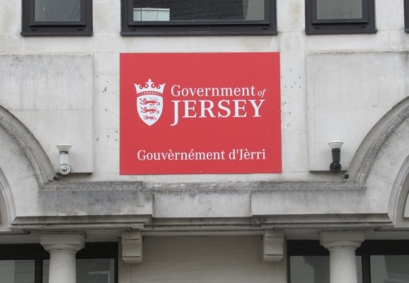

Les Minnistres

2008:
- Chef Minnistre
- Minnistre d'la Trésôr'rie et du Bein Publyi
- Minnistre pouor l'Dêv'loppement Êcononmique
- Minnistre pouor l'Êducâtion, l'Sport et la Tchultuthe
- Minnistre pouor la Santé et les Sèrvices Sociaux
- Minnistre pouor l's Affaithes dé Siez Nous
- Minnistre pouor l'Louogement
- Minnistre pouor la Pliann'nie et l'Envithonnement
- Minnistre pouor la Seûth'té Sociale
- Minnistre pouor l'Transport et les Sèrvices Techniques
2018:
- Chef Minnistre
- Minnistre pouor l's Êfants et l'Louogement
- Minnistre pouor l's Affaithes Hors Pays
- Minnistre pouor l'Êducâtion
- Minnistre d'la Trésôr'rie et du Bein Publyi
- Minnistre pouor l'Dêv'loppement Întèrnâtionna
- Minnistre pouor la Seûth'té Sociale
- Minnistre pouor l'Dêv'loppement Êcononmique
- Minnistre pouor l'Envithonnement
- Minnistre pouor l's Affaithes dé Siez Nous
- Minnistre pouor l'Înfrastructuthe
- Minnistre pouor la Santé et les Sèrvices Sociaux
Viyiz étout: